Bejan (1985) extended the time-independent part of the
scale analysis of Patterson and Imberger (1980)
for the analogous single fluid heat transfer problem to binary mixtures.
The finite mass transfer rate effects of transpiration and
interdiffusion were neglected (
 ).
The scales for the mean Sherwood and Nusselt numbers are deduced from a simple
model of the semi-infinite vertical plate boundary layer. The six possible
permutations of 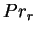,
).
The scales for the mean Sherwood and Nusselt numbers are deduced from a simple
model of the semi-infinite vertical plate boundary layer. The six possible
permutations of 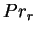,
 and unity in the relation 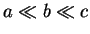 are
examined for
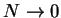 and
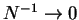. Since
and unity in the relation 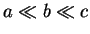 are
examined for
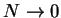 and
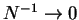. Since  ,
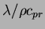 and
,
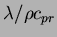 and  are typically of a similar magnitude for
gas-vapour mixtures; so that
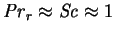;
none of these limiting cases are applicable. They are,
however, of theoretical interest, and are important for amalgams and brines,
for which
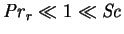 (Bergman & Hyun 1996) and
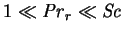 (Hyun & Lee 1990),
respectively.
are typically of a similar magnitude for
gas-vapour mixtures; so that
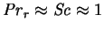;
none of these limiting cases are applicable. They are,
however, of theoretical interest, and are important for amalgams and brines,
for which
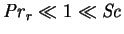 (Bergman & Hyun 1996) and
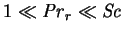 (Hyun & Lee 1990),
respectively.
Bejan verified his predictions by comparison with numerical solutions for the
limiting case  and
and
 with
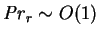 and
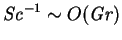
in two-dimensional vertical cavities of height
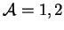 and 4.
Further tests of the predicted scales were undertaken by
Béghein et al. (1992; §3.3.15).
with
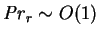 and
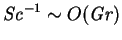
in two-dimensional vertical cavities of height
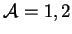 and 4.
Further tests of the predicted scales were undertaken by
Béghein et al. (1992; §3.3.15).
A result relevant to the consideration of the conduction regime
in chapters 4-5 is that the vertical velocity profile at
midheight (
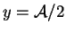) depended only weakly on  for
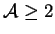.
for
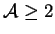.